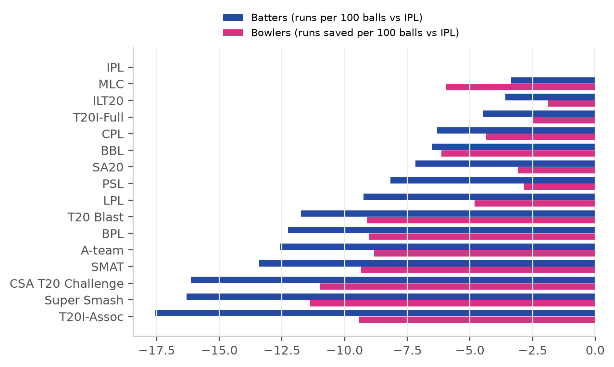
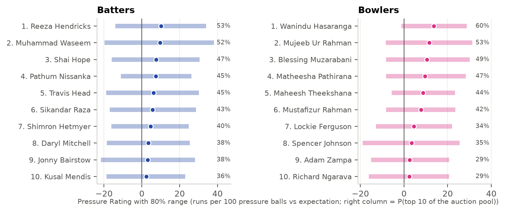

SupeRR Selector Season 2 · Round 1 · Rajasthan Royals × Unstop
Who should RR back under pressure at the IPL 2027 auction?
Pressure ball = the next delivery can swing the match most (top 25% of balls by expected change in win probability).
Pressure Rating = runs a player is expected to add per 100 pressure balls next season vs what the situation predicts (wicket = 5.6 runs; 0 = average), from a Bayesian model tested on unseen seasons.
Only players RR can buy are listed: released on 17 Nov 2026 or not on any IPL roster – none retained by another team, none already at RR.
Top 10 batters RR should back at the 2027 auction
| # | Player | Rating 80% range | P(top 10) | Pressure balls | Available as |
|---|
| 1 | Reeza Hendricks South Africa | 10.1 -14 to 34 | 53% | 260 | Open market* |
| 2 | Muhammad Waseem United Arab Emirates | 9.7 -20 to 38 | 52% | 173 | Open market* |
| 3 | Shai Hope West Indies | 7.5 -16 to 30 | 47% | 330 | Open market* |
| 4 | Pathum Nissanka Sri Lanka | 7.3 -11 to 26 | 45% | 645 | Released by DC |
| 5 | Travis Head Australia | 6.2 -19 to 30 | 45% | 569 | Released by SRH |
| 6 | Sikandar Raza Zimbabwe | 5.7 -17 to 29 | 43% | 189 | Open market* |
| 7 | Shimron Hetmyer West Indies | 4.6 -16 to 25 | 40% | 240 | Released by RR |
| 8 | Daryl Mitchell New Zealand | 3.5 -19 to 25 | 38% | 188 | Open market* |
| 9 | Jonny Bairstow England | 3.0 -22 to 28 | 38% | 221 | Open market* |
| 10 | Kusal Mendis Sri Lanka | 2.4 -19 to 23 | 36% | 477 | Open market* |
Top 10 bowlers RR should back at the 2027 auction
| # | Player | Rating 80% range | P(top 10) | Pressure balls | Available as |
|---|
| 1 | Wanindu Hasaranga Sri Lanka | 13.6 -1 to 29 | 60% | 329 | Released by LSG |
| 2 | Mujeeb Ur Rahman Afghanistan | 11.5 -8 to 31 | 53% | 256 | Open market* |
| 3 | Blessing Muzarabani Zimbabwe | 10.5 -8 to 30 | 49% | 263 | Released by KKR |
| 4 | Matheesha Pathirana Sri Lanka | 9.5 -8 to 28 | 47% | 246 | Released by KKR |
| 5 | Maheesh Theekshana Sri Lanka | 8.7 -6 to 23 | 44% | 524 | Open market* |
| 6 | Mustafizur Rahman Bangladesh | 7.8 -8 to 23 | 42% | 400 | Released by KKR |
| 7 | Lockie Ferguson New Zealand | 4.5 -13 to 22 | 34% | 285 | Released by PBKS |
| 8 | Spencer Johnson Australia | 3.4 -19 to 25 | 35% | 150 | Released by CSK |
| 9 | Adam Zampa Australia | 2.6 -15 to 21 | 29% | 164 | Open market* |
| 10 | Richard Ngarava Zimbabwe | 2.4 -16 to 21 | 29% | 248 | Open market* |
"Clutch" does not repeatA player's pressure-minus-usual gap made next-season predictions worse (batters -0.034, bowlers -0.030 correlation).
Fair overall skill predicts pressure playr = 0.19 / 0.24 vs a best-possible 0.44 / 0.34.
The obvious formula failsA hand-weighted pressure score (our v1) had no out-of-sample signal: r = -0.02 / -0.12.
Eligibility as for all ratings: ≥150 pressure balls in the RR data and active in 2025 or later. P(top 10) = chance of being a genuine top-10 player within the auction pool after uncertainty – the top two or three in each list are the clearest; the rest are near-ties, so role, price and fitness should decide (§6).
* Open-market players were not on a 2026 IPL roster and must register for the auction. The best performers overall – mostly retained by their teams – are shown in §4.
1 · The brief and our answer
What the problem statement asks – and where we answer it
| Required | Our solution | Where |
|---|
| Pressure definition | Learned leverage index: how much the next ball can swing win probability; top 25% of balls = pressure. 7 definitions compared. | §2 |
| Performance measurement | Run value per ball vs the situation's expectation (wicket = 5.6 runs); batters and bowlers on one scale; pressure vs usual shown for every player. | §3 |
| Fair comparisons | Opposition, venue, era and league strength adjusted (1.6 M public balls); Bayesian shrinkage for small samples; eligibility ≥150 pressure balls, active 2025+. | §3 |
| Evidence for the top 10 | Ratings with 80% ranges, P(top 10), observed pressure vs normal, biggest pressure moments, scout cards for 60 players, interactive site. | §4 |
| Reliability & limitations | Tested on 4 seasons the models never saw; clutch test; calibration; sensitivity; ablation; fairness; full rerun reproduces the lists. | §5 |
| Two ordered top-10 lists | Players RR can back at the IPL 2027 auction (p.1) = the Unstop picks; the open ranking of all players (§4) validates the method across the full field. | p.1 |
From ball to rating: the pipeline
1
Win probabilityevery ball, both innings; era, venue, team strength
→
2
Leveragehow much the next ball can swing the match
→
3
Expected outcomeruns & wicket chance for that exact situation
→
4
Run valuewhat the player added vs expectation
→
5
Fair comparisonopposition, venue, league strength
→
6
Bayesian ratingshrink small samples; calibrated 80% range
1.67 M
deliveries modelled (RR pack + 15 public T20 competitions, 2019–26)
89 / 102
eligible batters / bowlers (≥150 pressure balls, active 2025+)
4
season-ahead test folds (2023–26): every model scored on unseen seasons
9
player-skill models compared, incl. the v1 formula
Data & rules we followed
RR pack (IPL + T20I + A-team 2022–26) for ratings; Cricsheet (ODC-By) public T20 data only as a prior and for league strength; 99.07% of RR balls linked to public IDs by ball alignment.
No leakage: every predictive model is trained on earlier seasons and scored on the next. Reputation and news never change a rating – scout notes only flag risks.
What else we built
Player profiles for 6,748 players (all splits, reconciled to the ball data), 60 scout cards, value & uncapped lists with a price model, a youth board with a backtested development model,
an RR squad-gap analysis after retentions, and a private interactive website for evaluators. One command (run_all.sh) reproduces everything.
2 · Pressure definition
Pressure = balls where the next delivery can swing the match
For every ball we estimate the batting side's win probability (logistic model with run rate, wickets, balls, target, era par, venue and team Elo). Leverage = the expected change in that probability from the next ball, averaged over its possible outcomes (0,1,2,3,4,6,wicket). The top 25% of balls are pressure balls.
The chart shows the shape cricket people expect: a chase tightens towards the end (3.5× an average ball in the 20th over), the death overs of the first innings matter, and middle overs are calm. Knockouts and close finishes are captured automatically.
We compared seven definitions (rule fixed in advance: keep leverage unless another is better on both tests)
| Definition | Capture× | Reliab. bat | Reliab. bowl |
|---|
| leverage | 1.98 | 0.18 | 0.04 |
| leverage phase | 1.94 | 0.16 | 0.04 |
| baseline PI | 1.93 | 0.16 | 0.03 |
| rrr gap | 0.90 | 0.37 | -0.29 |
| wicket stress | 0.76 | 0.07 | 0.28 |
| close game | 1.35 | 0.12 | 0.09 |
| leverage stakes | 1.97 | 0.22 | 0.12 |
Capture× = share of all win-probability movement that falls on the flagged balls, relative to random (1.0). Leverage captures 2.0× – twice as much swing per ball as chance.
Reliability = how well a player's performance on those balls in one half of his matches matches the other half. Required-rate gap (chases only), wicket stress and the close-game window capture far less of the match swing. The baseline's knockout-weighted index and a playoff-stakes version are near-identical and serve as sensitivity checks.
3 · Performance measurement & fair comparisons
Run value: what a player adds beyond what the situation predicts
Per ball: runs scored − expected runs for that exact situation − 5.6 × (dismissal − expected dismissal chance). Bowlers: the mirror image (runs saved + wickets).
Expected values come from a gradient-boosting model of the situation only (innings, over, wickets, target, required rate, era, venue, team strength – no player information), so openers are not flattered by the powerplay and finishers are not punished for facing yorkers.
The usual vs pressure comparison the brief asks for is computed for every player (§4).
How strong is each league? (IPL = 0; further left = weaker)

Fair across leagues, venues, opponents, eras
A ridge model of 1.6 M deliveries separates player skill from league, venue and opponent effects, using players who appear in several competitions (match-bootstrap SEs ≈ 0.4–1.2 runs per 100 balls). Full-member T20Is sit close to the IPL; associate T20Is are about 18 runs per 100 balls weaker for batters.
Small samples: a hierarchical Bayesian model shrinks thin records toward the average; eligibility needs ≥150 pressure balls and an appearance in 2025 or later. Era: IPL par rose from about 162 to 186 since the Impact Player rule; the par term absorbs it.
Win-probability model: logistic regression beat tree models on unseen seasons (log-loss 0.634/0.402 vs the v1 replica 0.695/0.463); simpler was better, so it was kept.
3b · Models and training logic
How the models work – and how we trained them
1 · Win probability (batting side, every ball, both innings)
WP(s) = σ( β · x(s) ), x = runs needed, balls left, wickets in hand, run rates, era par, venue, team Elo
2 · Leverage = pressure
LI(s) = Σk pk(s) · | WP(s after outcome k) − WP(s) |, k ∈ {0,1,2,3,4,6,W}
pk = chance of each outcome in that exact state (learned outcome model). Top 25% of LI = pressure ball.
3 · Run value per ball
RV = (runs − E[runs | s]) − 5.6 × (out − P(out | s))
4 · Player rating (hierarchical Bayes)
θi ~ N(a + b·priori, σθ), ȳi ~ N(θi + δi, σ/√ni)
θ = player's true skill per ball; δ = pressure-specific effect (estimated, but not used to rank – it did not repeat); n = balls. Small samples are pulled towards the average automatically.
The four models, how they were trained and why we kept them
| Model | Predicts | Trained on | Validation | Chosen because |
|---|
| Win probability logistic regression | Batting side wins the match | All T20s 2019–26 (RR pack + Cricsheet), separate models per innings |
Log-loss / Brier / AUC on the next season (4 folds); 5 families compared | Best on unseen seasons (0.634/0.402); tree models over-fit match-level features |
| Expected outcomes gradient boosting (HGB) + 7-class model | Expected runs, dismissal chance, outcome mix for leverage | Situation only – no player information |
MSE / log-loss on the next season vs simple cell averages | 1.5% better on runs than averages; simpler where no gain |
| League & venue strength sparse ridge regression | Player, league, venue, opponent effects per ball | 1.6 M deliveries, players who appear in several leagues link the leagues |
Penalty chosen on the 2026 hold-out (runs λ=100, wickets λ=1000); 60 match bootstraps for SEs | Replaces hand-set opposition tiers with measured strength |
| Player rating Bayesian (NumPyro, NUTS) | Run value per pressure ball next season, with 80% range | RR-pack balls 2022–26; bowlers get a prior from public leagues only |
Correlation with next-season pressure performance vs 8 alternatives; interval coverage calibrated (×2.75 / ×3.00) | Within 1 SE of the best predictor and the only one with honest uncertainty |
Training without leakage: every model is tested on a season it never saw
Fold: train ≤2022, test 2023
2019
2020
2021
2022
2023
2024
2025
2026
Fold: train ≤2023, test 2024
2019
2020
2021
2022
2023
2024
2025
2026
Fold: train ≤2024, test 2025
2019
2020
2021
2022
2023
2024
2025
2026
Fold: train ≤2025, test 2026
2019
2020
2021
2022
2023
2024
2025
2026
■ training seasons ■ test season. Ratings used as features for season c+1 are rebuilt from models trained only on seasons ≤ c. The final ratings are refitted on all seasons.
What we dropped (and why)
Hand-set weights (no signal), pressure-specific "clutch" term (hurt prediction), age curve (no gain), tree WP models (over-fit). Rule: keep the simpler model unless the complex one wins on unseen seasons.
Fixes found by testing
Run rate shrunk towards par early in an innings (removed a first-ball swing); a prior that reused the same balls was replaced (intervals had been 3× too narrow); merged venues split by city.
Reproducibility
Fixed seeds, pinned environment, one command per stage; a clean rerun from raw data reproduces every list except one 0.01-point near-tie.
4 · Evidence for the top 10
Ratings with honest uncertainty

The best performers overall (open ranking) – and why they are not on our list
| # | Batter | Rating | IPL 2027 |
|---|
| 1 | Vaibhav Sooryavanshi | 37.4 | RR (retained) |
| 2 | Tim David | 24.7 | Retained by RCB |
| 3 | Abhishek Sharma | 24.3 | Retained by SRH |
| 4 | Finn Allen | 19.5 | Retained by KKR |
| 5 | Suryakumar Yadav | 19.3 | Retained by MI |
| 6 | Heinrich Klaasen | 16.6 | Retained by SRH |
| 7 | Phil Salt | 16.2 | Retained by RCB |
| 8 | Nicholas Pooran | 15.4 | Retained by LSG |
| 9 | Priyansh Arya | 10.9 | Retained by PBKS |
| 10 | Tim Seifert | 10.5 | Retained by KKR |
| # | Bowler | Rating | IPL 2027 |
|---|
| 1 | Jasprit Bumrah | 24.3 | Retained by MI |
| 2 | Sunil Narine | 21.5 | Retained by KKR |
| 3 | Rashid Khan | 16.2 | Retained by GT |
| 4 | Wanindu Hasaranga | 13.6 | Released by LSG |
| 5 | Varun Chakravarthy | 13.4 | Retained by KKR |
| 6 | Noor Ahmad | 12.3 | Retained by CSK |
| 7 | Mujeeb Ur Rahman | 11.5 | Open market* |
| 8 | Abrar Ahmed | 11.1 | Not eligible (Pakistan national) |
| 9 | Blessing Muzarabani | 10.5 | Released by KKR |
| 10 | Matheesha Pathirana | 9.5 | Released by KKR |
Pressure vs usual performance
Each dot is an eligible batter: observed run value on pressure balls (y) vs normal balls (x). Players above the line did better under pressure. Because that gap did not repeat from one season to the next, the rating relies on skill measured on all balls and shrinks the gap away – the gap is still shown for every player.
Behind each name: pressure strike rate / economy, phase splits, matchups, the three matches where he added most win probability (e.g. Bumrah 4-0-20-0 v RCB, +48% win probability), and sourced risk notes – in the 60 scout cards and on the website.
Why the open ranking matters: it validates the method on the whole field (its #1, Sooryavanshi, is already RR's – re-derived from the raw ball file: 295 pressure balls, SR ≈ 229). Of the open top 10s, 9 batters and 5 bowlers were retained by other teams, so the auction lists on p.1 are a different, less certain set.
5 · Reliability and limitations
Tested on seasons the models never saw

Consistency checks
| Variant | Bat top 10 kept | Bowl |
|---|
| Pressure = v1 index (x1.2 knockouts) | 8/10 | 9/10 |
| Pressure weighted by playoff stakes | 8/10 | 9/10 |
| Eligibility 100 pressure balls | 8/10 | 8/10 |
| Eligibility 200 pressure balls | 9/10 | 9/10 |
| Rank by adjusted skill only | 8/10 | 7/10 |
| Add pressure-specific effect | 10/10 | 7/10 |
| Rank by raw pressure record | 6/10 | 1/10 |
Ranking by the raw pressure record changes the list most – that is the noise our model removes.
Ablation: age curve and the pressure-specific term were dropped (no out-of-sample gain); public-league prior kept for bowlers only.
Fairness: errors for IPL-heavy, T20I-heavy and public-data-heavy players all within ~1 SE of zero.
Reproducible: a clean rerun from raw data reproduces every list; one #10 near-tie (0.01 apart) can swap through sampler noise.
Limitations
One season of pressure balls is mostly noise, so ranks inside the top 10 are close; fielding, pitch and weather are not in the data; batting hand / bowling type only exist for RR-pack balls; first-innings early overs carry above-average leverage under our WP model (ratings use all balls, so the top 10 is unaffected); auction prices are hard to predict; scout notes are opinion and never change a rating.
6 · For Rajasthan Royals: after the 17 Nov 2026 retentions
Where RR is exposed – and who it can actually buy
RR's best retained player per role vs league benchmark (red = big gap)

RR kept 19 players incl. Mohammed Shami and M Siddharth (traded in); Hetmyer, Deshpande, Milne, Maphaka and five others were released and Sam Curran went to LSG. The middle order (4–5) is now the biggest gap, then middle-overs spin; opening is RR's strength (Sooryavanshi).
| Team | Purse ₹cr | Slots | OS |
|---|
| Lucknow Super Giants | 47.45 | 7 | 3 |
| Kolkata Knight Riders | 41.65 | 8 | 3 |
| Sunrisers Hyderabad | 40.15 | 7 | 3 |
| Delhi Capitals | 39.50 | 9 | 4 |
| Mumbai Indians | 32.60 | 9 | 2 |
| Chennai Super Kings | 28.05 | 6 | 2 |
| Rajasthan Royals | 27.05 | 6 | 3 |
| Punjab Kings | 18.60 | 6 | 2 |
| Royal Challengers Bengaluru | 14.15 | 5 | 1 |
| Gujarat Titans | 8.75 | 3 | 2 |
Auction plan for the biggest gaps (only players in the auction pool)
| Role | Plan A | Plan B | Plan C | Value pick (≤ ₹3 cr) |
|---|
| Middle order (4-5) gap 11.8 | Mark Chapman 6.2 | Sikandar Raza 5.7 | Glenn Maxwell 5.7 | Asif Khan 4.3 |
| Middle-overs spin gap 6.9 | Wanindu Hasaranga 13.6 | Mujeeb Ur Rahman 11.6 | Roston Chase 7.3 | Dunith Wellalage 6.8 |
| Left-arm bowler gap 4.0 | Mustafizur Rahman 7.8 | Dunith Wellalage 6.8 | Matthew Humphreys 6.6 | Spencer Johnson 3.4 |
| Wrist spin gap 1.8 | Wanindu Hasaranga 13.6 | Adil Rashid 2.9 | Adam Zampa 2.6 | Qais Ahmad -0.9 |
| Death pace gap 1.3 | Blessing Muzarabani 10.4 | Matheesha Pathirana 9.6 | Mustafizur Rahman 7.8 | Ottneil Baartman 5.8 |
6 · The IPL 2027 auction pool
Best players NOT retained by any team
Every rated player who was released on 17 Nov 2026 or is not on any IPL roster – the only players RR can buy. Full lists (103 batters, 115 bowlers) in IPL2027_Auction_Pool_Lists.xlsx.
* open-market players must register for the auction. ex-XXX = released by that team. † record mostly in associate T20Is (weaker opposition) – treat with caution. E = emerging (40–149 pressure balls, wider range).
Batters in the auction pool
| # | Player · age | Role | Rating (80%) | From |
|---|
| 1 | Reeza Hendricks 37 | Opener | 10.3 -13 to 34 | Open mkt* |
| 2 | Muhammad Waseem† 33 | Opener | 9.9 -21 to 39 | Open mkt* |
| 3 | Shai Hope 33 | No.3 | 7.7 -15 to 30 | Open mkt* |
| 4 | Pathum Nissanka 28 | Opener | 7.3 -11 to 26 | ex-DC |
| 5 | Travis Head 33 | Opener, LH top-6 | 6.3 -16 to 29 | ex-SRH |
| 6 | Mark Chapman E 32 | Middle order, LH top-6 | 6.2 -17 to 31 | Open mkt* |
| 7 | Sikandar Raza 40 | Middle order | 5.7 -18 to 29 | Open mkt* |
| 8 | Glenn Maxwell E 38 | Middle order | 5.7 -16 to 28 | Open mkt* |
| 9 | George Dockrell E 34 | Finisher | 5.2 -23 to 35 | Open mkt* |
| 10 | Shimron Hetmyer 30 | Middle order, LH top-6 | 4.7 -15 to 24 | ex-RR |
| 11 | Asif Khan† E 37 | Middle order | 4.3 -31 to 39 | Open mkt* |
| 12 | Jaker Ali Anik E 29 | Finisher | 4.1 -23 to 31 | Open mkt* |
| 13 | Ben Duckett E 32 | No.3, LH top-6 | 3.7 -28 to 34 | ex-DC |
| 14 | Connor Esterhuizen E 25 | Middle order | 3.7 -36 to 44 | ex-GT |
| 15 | Daryl Mitchell 39 | Middle order | 3.5 -17 to 25 | Open mkt* |
Bowlers in the auction pool
| # | Player · age | Role | Rating (80%) | From |
|---|
| 1 | Wanindu Hasaranga 29 | Mid-overs spin, Wrist spin | 13.6 -1 to 28 | ex-LSG |
| 2 | Ehsan Khan† E 42 | Spin bowler | 12.4 -8 to 35 | Open mkt* |
| 3 | Mujeeb Ur Rahman 26 | Mid-overs spin | 11.6 -7 to 30 | Open mkt* |
| 4 | Allah Ghazanfar E 20 | Spin bowler | 10.9 -10 to 33 | ex-MI |
| 5 | Blessing Muzarabani 30 | PP pace, Death pace | 10.4 -9 to 29 | ex-KKR |
| 6 | Matheesha Pathirana 24 | Death pace | 9.6 -9 to 28 | ex-KKR |
| 7 | Maheesh Theekshana 26 | Spin bowler | 8.7 -6 to 23 | Open mkt* |
| 8 | Mustafizur Rahman 31 | PP pace, Death pace, Left-arm | 7.8 -8 to 24 | ex-KKR |
| 9 | Roston Chase E 35 | Mid-overs spin | 7.3 -12 to 27 | Open mkt* |
| 10 | Dunith Wellalage E 24 | Mid-overs spin, Left-arm | 6.8 -14 to 27 | Open mkt* |
| 11 | Mark Wood E 37 | PP pace, Death pace | 6.7 -16 to 30 | Open mkt* |
| 12 | Matthew Humphreys E 24 | Mid-overs spin, Left-arm | 6.6 -14 to 28 | Open mkt* |
| 13 | Ottneil Baartman E 34 | PP pace, Death pace | 5.8 -16 to 27 | Open mkt* |
| 14 | Brad Evans E 33 | PP pace, Death pace | 4.6 -17 to 26 | Open mkt* |
| 15 | Lockie Ferguson 35 | PP pace, Death pace | 4.4 -13 to 22 | ex-PBKS |
Selector verdicts for the leading auction-pool names
| Player | Verdict | Fills | Rating | Main risks |
|---|
| Mujeeb Ur Rahman | Priority target | Mid-overs spin | 11.5 | wide range |
| Blessing Muzarabani | Target | PP pace, Death pace | 10.5 | wide range; competition expected |
| Wanindu Hasaranga | Medical check first | Mid-overs spin, Wrist spin | 13.6 | 2026 injuries; wide range; competition expected |
| Matheesha Pathirana | Medical check first | Death pace | 9.5 | 2026 injuries; wide range; competition expected |
| Reeza Hendricks | Value / back-up option | Opener | 10.3 | age 37 on 1 Apr 2027; wide range |
| Muhammad Waseem | Value / back-up option | Opener | 9.9 | wide range |
| Mustafizur Rahman | Value / back-up option | PP pace, Death pace, Left-arm | 7.8 | wide range; competition expected |
| Shai Hope | Value / back-up option | No.3 | 7.7 | wide range |
7 · Beyond the top 10
Value buys, available youngsters and what we delivered
Value buys in the pool (uncapped, or est. ≤ ₹3 cr)
| Batter | Cap | Rating | Est. price ₹cr |
|---|
| Shai Hope | capped | 7.7 | 2.3 |
| Mark Chapman | capped | 6.2 | 2.6 |
| Sikandar Raza | capped | 5.7 | 2.4 |
| George Dockrell | capped | 5.2 | 2.6 |
| Asif Khan | capped | 4.3 | 2.7 |
| Bowler | Cap | Rating | Est. price ₹cr |
|---|
| Roston Chase | capped | 7.3 | 2.7 |
| Dunith Wellalage | capped | 6.8 | 2.7 |
| Matthew Humphreys | capped | 6.6 | 2.6 |
| Ottneil Baartman | capped | 5.8 | 2.5 |
| Brad Evans | capped | 4.6 | 2.4 |
Youngsters in the auction pool (≤23 on 1 Apr 2027)
Batters
| # | Player · age | Board | Projection | Available as |
|---|
| 1 | Brian Bennett 23 | Strong watch | 43.7 23–64 | Open mkt* |
| 2 | Hassan Eisakhil 20 | Strong watch | 35.9 12–60 | Open mkt* |
| 3 | Jacob Bethell 23 | Strong watch | 31.7 11–52 | ex-RCB |
| 4 | JM Coles 22 | Strong watch | 30.4 9–51 | Open mkt* |
| 5 | Joel Davies 23 | Track | 29.5 6–54 | Open mkt* |
| 6 | JT Todd 23 | Track | 27.6 5–50 | Open mkt* |
| 7 | JEK Rew 23 | Track | 26.1 5–48 | Open mkt* |
| 8 | W Luxton 23 | Track | 21.9 0–44 | Open mkt* |
Bowlers
| # | Player · age | Board | Projection | Available as |
|---|
| 1 | Allah Ghazanfar 20 | Strong watch | 32.6 13–52 | ex-MI |
| 2 | Joel Davies 23 | Strong watch | 22.3 1–44 | Open mkt* |
| 3 | F Singh 22 | Strong watch | 17.6 -4–39 | Open mkt* |
| 4 | AM Green 20 | Strong watch | 17.4 -6–40 | Open mkt* |
| 5 | SM Meherob 23 | Strong watch | 15.0 -7–37 | Open mkt* |
| 6 | Farhan Ahmed 19 | Strong watch | 15.0 -8–38 | Open mkt* |
| 7 | M Tharupathi 22 | Track | 11.4 -11–34 | Open mkt* |
| 8 | Mahli Beardman 21 | Track | 11.3 -10–33 | Open mkt* |
Projection = adjusted skill per 100 balls in all situations (different scale from the Pressure Rating), next season with 80% range; development model backtested on players aged ≤23 in 2021. Full lists incl. ages 24–26 in the workbook. Minors: cricket data and age only.
What we delivered
Interactive evaluator site
Private, password-protected and encrypted: rankings with filters, a profile page for 394 players, compare, method explainer, RR strategy and this report.
Reproducible pipeline
30 stage scripts, one command (run_all.sh), fixed seeds, pinned environment; a clean rerun from raw data reproduces every list (one 0.01 near-tie can swap).
Decision support for the auction
Scout cards for 60 players, value and youth boards, squad-gap analysis and plan A/B/C per role – refreshed after the 17 Nov retentions; config files make the next refresh a rerun, not a rewrite.
Future scope: from analysis to a live auction tool
- RR Pressure Scout app – upload any new data pack (CSV, Excel, JSON, Cricsheet); columns are mapped automatically, validated and de-duplicated; player identities checked, never merged silently.
- Refresh or retrain on new data – the app decides and explains; a retrained model replaces the current one only if it is at least as good on unseen seasons; drift checks and a model registry.
- Auction optimiser – picks the best set of targets within purse, slot and overseas limits, with max bids, plan A/B/C per role, youth-investment and risk sliders, and instant what-ifs.
- Live auction mode – enter each lot; purses and slots of all 10 teams update, RR's targets and max bids re-optimise, alerts when a last option in a role goes.
- Better price model – train on the official auction register (base price, set) and show price ranges backtested on past auctions.
- Richer data – fielding, ball-tracking and pitch data would sharpen ratings; U19 and state-league scorecards would firm up the youth board.